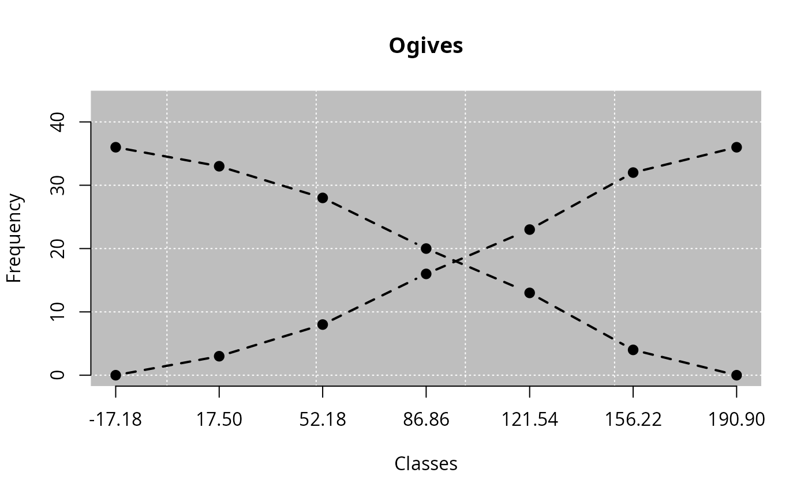
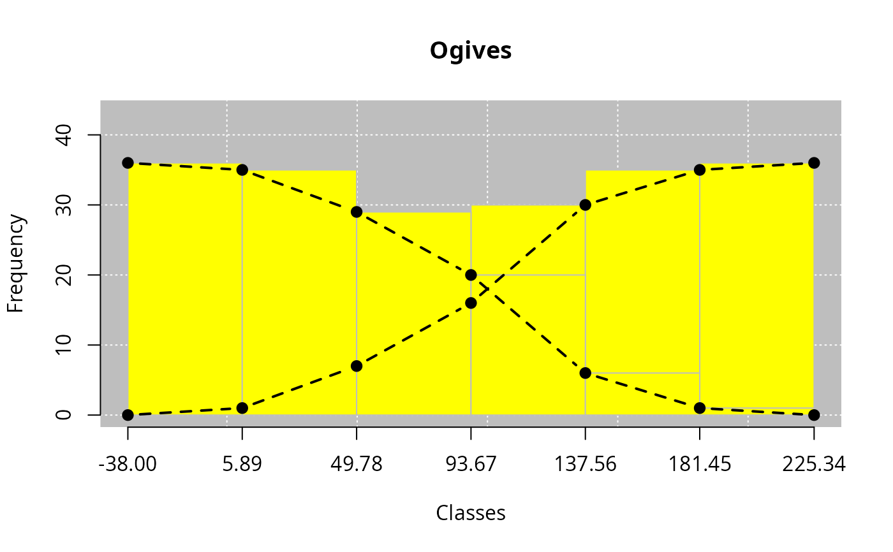
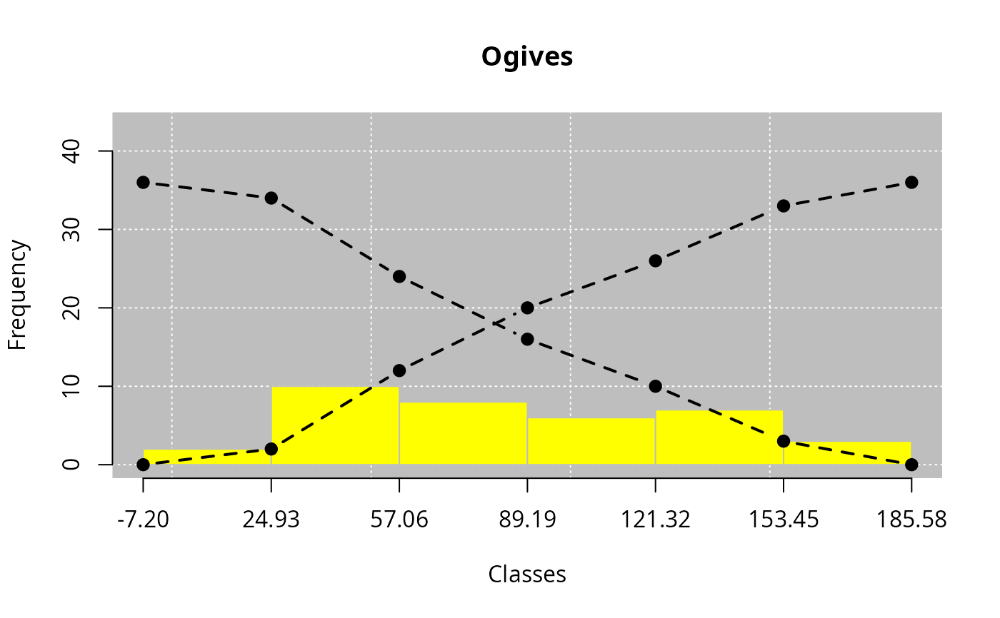

Generic function that plots the culmulative frequency curve.
Usage
ogive(x, ...)
# S3 method for class 'leem'
ogive(
x,
freq = "a",
decreasing = FALSE,
both = FALSE,
bars = FALSE,
histogram = FALSE,
bg = TRUE,
main = NULL,
xlab = NULL,
ylab = NULL,
grids = grid(col = "white"),
bgcol = "gray",
bgborder = NA,
barcol = "yellow",
histcol = barcol,
barborder = "gray",
histborder = barborder,
type = "b",
lpcol = "black",
lwd = 2,
pch = 19,
lty = 2,
...
)Arguments
- x
R object (list) of class leem. Use
new_leem()function.- ...
further arguments passed to or from other methods.
- freq
Character argument. Type of frequency with options:
"a"(absolute and default),"r"relative and"p"percentage.- decreasing
Logical argument. Default is
FALSE. Ifdecreasing = FALSE, it represents the "ogive larger than", ifdecreasing = TRUE, it represents the "ogive less than".- both
Logical argument. Default is
FALSE. Ifboth = TRUE, both o will be plotted. Ifboth = FALSEotherside.- bars
Logical argument. Default is
FALSE. Ifbars = TRUE, the bars of the accumulated frequency will be inserted to plot, according to thedecreasingargument. Ifbars = FALSEotherside.- histogram
Logical argument. Default is
FALSE. Ifhistogram = TRUE, the histogram will be inserted to plot.- bg
Logical argument. Default is
TRUE, it displays the background, andbg = FALSEotherwise.- main
Insert the plot title. The default is
NULL.- xlab
Insert the title of the x-axis graphic label. The default is
NULL.- ylab
Insert the title of the y-axis graphic label. The default is
NULL.- grids
Insert grids to plot. The default is
grid(col = "white").- bgcol
Insert the background color. This argument is only valid when
bg = TRUE. The default isbgcol="gray".- bgborder
Insert the background border color. This argument is only valid when
bg = TRUE. The default is bgborder = NA.- barcol
Insert the barplot color. The default is
barcol = "yellow". This argument is only valid whenbars = TRUE.- histcol
Insert the histogram color. The default is
histcol = barcol. This argument is only valid whenhistogram = TRUE.- barborder
Insert the barplot border color. This argument is only valid when
bars = TRUE. The default is barborder = "gray".- histborder
Insert the histogram border color. This argument is only valid when
histogram = TRUE. The default is histborder = barborder.- type
Type of plot. The default is
type = "b", i.e., line and points. Seegraphical parameterfor details.- lpcol
Type of line color. The default is
lpcol = "black".- lwd
numeric argument. The line width. The default is
lwd = 2.- pch
Type of point. The default is
pch = 19.- lty
Type of line. The default is
lty = 2.
Examples
library(leem)
# Example 1 - Both ogives
rnorm(36, 100, 50) |> new_leem(variable = 2) |> tabfreq() |> ogive(both = TRUE)

# Example 2 - Insert barplot
rnorm(36, 100, 50) |> new_leem(variable = 2) |> tabfreq() |> ogive(both = TRUE, bars = TRUE)

# Example 3 - Insert histogram
rnorm(36, 100, 50) |> new_leem(variable = 2) |> tabfreq() |> ogive(both = TRUE, histogram = TRUE)
